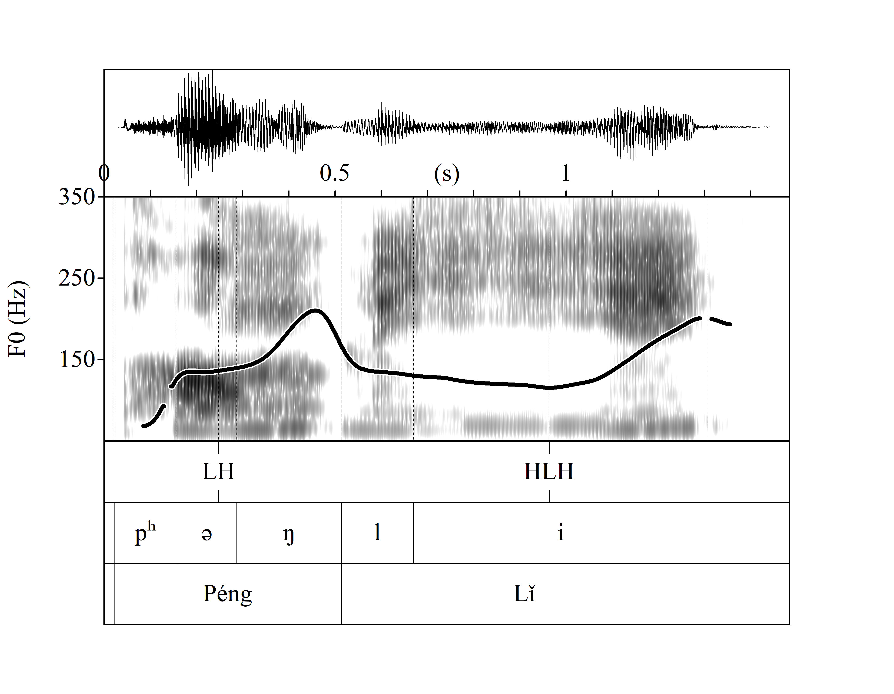

I am a Marie Skłodowska-Curie fellow and Assistant Researcher at Center of Linguistics, University of Lisbon (CLUL), Portugal.
I received my Ph.D. in Translation and Language Science (2021) from the University Pompeu Fabra, Spain. After that, I worked as a Post-doc Fellow in Psycholinguistics (2022-23) at the University of Oslo (UiO), Norway. Then, I was granted a Juan de la Cierva fellowship (2024-25) by the Spanish State Research Agency (AEI) and worked at the Basque Center on Cognition, Brain, and Language (BCBL), Spain. Before moving to Europe, I was a Lecturer of Japanese Studies (2013-17) at Hefei University (China).
My research can be summarized in three lines:
Feel free to contact me when you have any questions or comments about my research, or if you are interested in collaboration!
